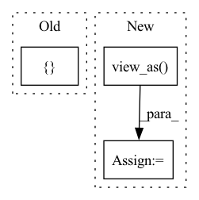

Pattern ID :4304
Before Change
output = model(data)
error = error_rate(output, labels)
return { "validation_error": error}
After Change
validation_loss = torch.nn.functional.nll_loss(output, labels).item()
pred = output.argmax(dim=1, keepdim=True)
accuracy = pred.eq(labels.view_as( pred) ).sum().item() / len(data)
return {"validation_loss": validation_loss, "accuracy": accuracy}
In pattern: SUPERPATTERN
Frequency: 3
Non-data size: 3
Instances Fragment ID: 15812357
Project Name: determined-ai/determined
Commit Name: 1b0602441f97626a0091979b9483ec9999eba72d
Time: 2020-04-17
Author: katie@determined.ai
File Name: examples/official/mnist_pytorch/model_def.py
M Class Name: MNistTrial
N Class Name: MNistTrial
M Method Name: evaluate_batch(3)
N Method Name: evaluate_batch(3)
M Parent Class: PyTorchTrial
N Parent Class: PyTorchTrial
M File Name: examples/official/mnist_pytorch/model_def.py
N File Name: examples/official/mnist_pytorch/model_def.py
M Start Line: 123
M End Line: 126
N Start Line: 105
N End Line: 111
Before Change
mean_excls = dvec_excls.mean(dim=-1)
ctrd_excls = torch.stack([
torch.cat([ ctrds[:s, :],
mean_excls[s, u, :].unsqueeze(0),
ctrds[s+1:, :]After Change
indices = _indices_to_replace(n_spkr, n_uttr)
ctrd_excls = ctrd_expns.index_copy(0, indices, mean_excls)
ctrd_excls = ctrd_excls.view_as( dvec_expns)
return F.cosine_similarity(dvec_expns, ctrd_excls, 3, 1e-6)
def embed_loss_softmax(self, dvecs, cos_sim_matrix): Fragment ID: 15812359
Project Name: yistlin/dvector
Commit Name: 1051873ad612f253287d1afaaac2df5571a42cdb
Time: 2020-04-05
Author: yishen992@gmail.com
File Name: modules/ge2e.py
M Class Name: GE2ELoss
N Class Name: GE2ELoss
M Method Name: cosine_similarity(2)
N Method Name: cosine_similarity(2)
M Parent Class: nn.Module
N Parent Class: nn.Module
M File Name: modules/ge2e.py
N File Name: modules/ge2e.py
M Start Line: 39
M End Line: 54
N Start Line: 41
N End Line: 53
Before Change
output = model(data)
error = error_rate(output, labels)
return { "validation_error": error}
After Change
validation_loss = torch.nn.functional.nll_loss(output, labels).item()
pred = output.argmax(dim=1, keepdim=True)
accuracy = pred.eq(labels.view_as( pred) ).sum().item() / len(data)
return {"validation_loss": validation_loss, "accuracy": accuracy}
Fragment ID: 15812361
Project Name: determined-ai/determined
Commit Name: 04643aabba3bf9ec21f1e5738d6ffeb59b0ed2be
Time: 2020-08-03
Author: shiyuan@determined.ai
File Name: examples/official/native/native_mnist_pytorch/model_def.py
M Class Name: MNistTrial
N Class Name: MNistTrial
M Method Name: evaluate_batch(2)
N Method Name: evaluate_batch(3)
M Parent Class: PyTorchTrial
N Parent Class: PyTorchTrial
M File Name: examples/official/native/native_mnist_pytorch/model_def.py
N File Name: examples/official/native/native_mnist_pytorch/model_def.py
M Start Line: 103
M End Line: 110
N Start Line: 93
N End Line: 99